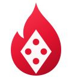

Uma ação inédita de Live Casino + um programa de Cashback de 10% nas mesas Spin Gaming dentro da Blaze. Mais UAPI, mais depósitos, mais volume de apostas.
Combinamos aquisição autêntica (Influencer Dealer) com retenção inteligente (Cashback 10%). Uma traz o jogador real; a outra o mantém ativo, depositando e apostando.
Treinamos um influenciador da marca na Spin Academy e o colocamos para operar uma mesa ao vivo na Blaze. Entretenimento real, comunidade engajada e tráfego qualificado direto para a mesa.
Programa de cashback nas mesas Spin Gaming dentro da Blaze, começando em 10% sobre perdas. Reduz o atrito da derrota, prolonga a sessão e transforma jogador casual em jogador recorrente.
No 1º ano regulado, o Brasil consolidou um dos maiores mercados de apostas do mundo. A disputa agora não é por existência, é por atenção e retenção.
Campanhas de bônus genéricas enchem o banco de dados de caçadores de bônus: convertem abaixo de 1,2% e somem na primeira semana. O que move o negócio é o UAPI — Uniq Authentic Player: jogador único, real e engajado, que volta e deposita por vontade própria.
Tiramos o criador da posição de apostador e o colocamos como dealer ao vivo. Ele lida as cartas, gira a roleta, interage no chat e transforma a mesa Spin Gaming em um programa de entretenimento dentro da Blaze.
Influenciador já conhecido e confiável para a base Blaze.
Capacitação completa: regras, operação da mesa e dinâmica de interação ao vivo.
Live na mesa Spin Gaming dentro da Blaze, com chat, desafios e PIX em destaque.
Cortes para TikTok, Reels e YouTube — viralização e cauda longa de tráfego.
A ação que a Spin já rodou provou o apelo do formato. E os números do mercado mostram por que o influenciador-dealer é a forma mais barata e autêntica de adquirir UAPI.
| Critério | Mega-influencer (500k+) | Criador autêntico (20-200k) | Vantagem |
|---|---|---|---|
| Confiança da audiência | Baixa (visto como anúncio) | Alta (membro da comunidade) | Crítico p/ iGaming |
| CPA médio | US$ 85-120 | US$ 22-38 | −65% de custo |
| Taxa de engajamento | 1,8-2,5% | 8-12% | 5x maior |
A confiança do criador encurta a distância entre descobrir e apostar. O funil inteiro acontece dentro da mesma experiência.
Audiência autêntica do influenciador, em escala (TikTok / YT / IG).
"O amigo que indica o jogo": engajamento 5x maior que mídia paga.
Cadastro real com PIX direto na mesa — não caçador de bônus.
37% de taxa de depósito + PIX em destaque na live.
Mesa ao vivo + permanência prolongada = mais apostas (GGV).
Tráfego qualificado e único entra direto na mesa Spin dentro da Blaze, com CPA até 65% menor.
O formato híbrido (assistir + participar) aumenta o tempo de permanência e a propensão a depositar via PIX.
Desafios e interação ao vivo aceleram a frequência de apostas — base do GGV e do GGR da Blaze.
Devolvemos 10% das perdas líquidas do jogador nas mesas Spin Gaming. Simples, transparente e calibrado na faixa que o mercado comprova como a mais eficaz.
Cashback inicial de 10% sobre o resultado líquido negativo nas mesas Spin Gaming.
Apurado e creditado por período — devolve valor justamente quando a variância é maior.
Sem armadilhas: rollover baixo e termos transparentes = valor real percebido.
Estrutura pronta para evoluir em níveis VIP conforme engajamento da base.
Operadores que aplicam cashback sobre perdas na faixa de 10%-20% reportam maior continuação de sessão e menor churn pós-perda.
Começar em 10% protege a margem da Blaze, prova o conceito e deixa espaço para escalar por desempenho.
Adquirir custa caro; reter multiplica lucro. O cashback ataca exatamente o momento de maior abandono — a derrota — e transforma frustração em nova sessão.
A maioria dos jogadores pensa em abandonar a plataforma após uma sequência de perdas. O cashback devolve valor exatamente nesse momento de aversão à perda — reduz a frustração, prolonga a sessão e aumenta a probabilidade de um novo depósito.
Programas de recompensa e personalização no cassino elevam o valor médio da aposta em +34%, a taxa de colocação de apostas em +20-25% e a receita do cassino em +15%.
Separadas, são duas boas ações. Juntas, criam um ciclo que se acelera sozinho: o influenciador traz o UAPI, o cashback o mantém — e a base ativa vira público para a próxima live.
Adquire UAPI autêntico e barato direto na mesa.
Retém o UAPI após a perda e estimula novo depósito.
Jogadores recorrentes = mais volume e LTV na Blaze.
Base engajada vira público para a próxima ação do dealer.
CPA até 65% menor que mega-influência e mídia paga restrita.
Cashback 10-20% reduz churn pós-perda e prolonga sessões.
Cada live gera cortes virais e cauda longa de aquisição.
A Spin Gaming entrega estrutura técnica, treinamento e operação da mesa ao vivo. A Blaze entrega a plataforma e a base. Começamos enxuto e escalamos por resultado.
Seleção do influenciador, alinhamento de marca e configuração das mesas Spin na Blaze. Definição do mecanismo de cashback (10%).
Treinamento do influenciador como dealer na Spin Academy: regras, operação e interação ao vivo.
Primeira transmissão do Influencer Dealer + ativação do cashback. PIX e CTA em destaque. Cortes para redes sociais.
Calendário recorrente de lives, novos dealers e evolução do cashback por tiers conforme os KPIs.
Cada ação tem métrica de saída. Acompanhamos em painel compartilhado e ajustamos o cashback e o calendário de lives por performance real.
| Pilar | KPI principal | O que observar | Benchmark de referência |
|---|---|---|---|
| Aquisição | UAPI por live | Cadastros únicos reais via mesa | Conversão de espectador ~14% |
| Monetização | Taxa de 1º depósito | % de UAPI que deposita (PIX) | ~37% em ações de streamer |
| Volume | GGV / apostas por jogador | Frequência e ticket de aposta | +20-25% c/ personalização |
| Retenção | Churn pós-perda / D30 | Continuação de sessão após cashback | +14-30% em retenção 90d |
| Eficiência | CPA & ROI | Custo por UAPI vs. mídia paga | CPA −65% · ROI 3,2x |
| Alcance | Views & cortes | Visualizações e cauda longa social | ~1 mi na ação validada |
Proposta: aprovar um piloto com 1 influenciador como dealer nas mesas Spin Gaming dentro da Blaze + cashback de 10%, medido por UAPI, depósitos e volume de apostas.
Mesas, Spin Academy, operação ao vivo e mecânica de cashback.
Plataforma, base e o influenciador-âncora da marca.
Uma ação inédita que vira conteúdo, comunidade e receita.
Fontes: SPA-MF/Min. Fazenda · Blask · BidCanvas · Uberman Agency · Sportradar/VAIX · Altenar · GameOn · Jovem Pan. Dado de ~1 mi de views: interno Spin Gaming.